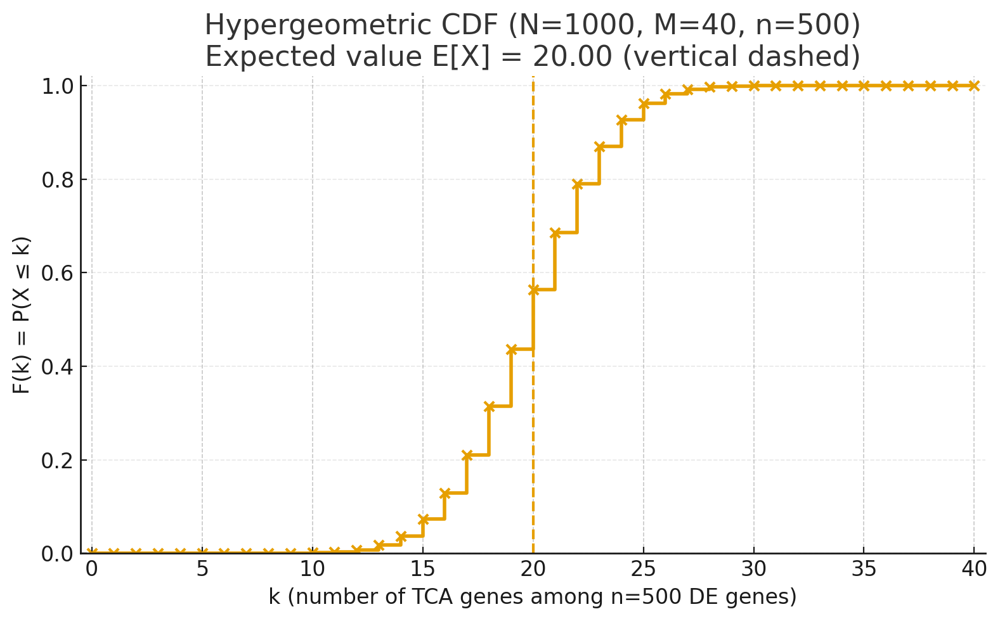
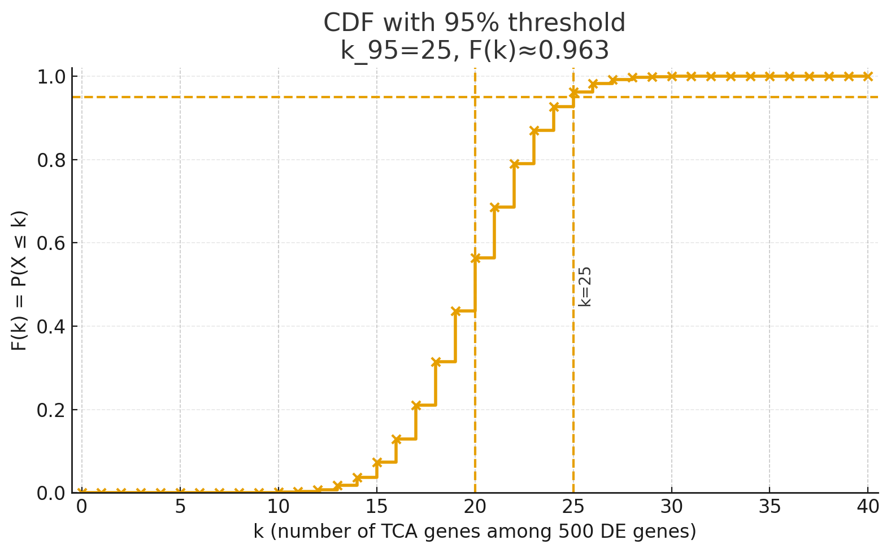

在做了基因的差异分析后，我们会得到上万个具有差异表达的基因，这些基因有可能已经被注释到了具体功能，获得到具体的Entrez gene ID，也有可能没有，只是通过基因预测得来的基因编号ID。
放到一个具体例子下，你对某个生物进行了奇怪的操作，这个操作对这个生物起到了一些奇奇怪怪的效应，我们不可能对每一个基因的上调和下调进行解释：第一，基因太多了，你一个解释完地球都毁灭了。第二，基因间也有关系，你不能独立的去解释每一个基因，而是应该把它们放在一起分析，以经典的三羧酸循环为例子，里面的八种酶八个基因共同决定着生物的新陈代谢，我们要对TCA整体去进行一个把控，这就引出了我们的核心：把基因富集到一起去观察某一个过程的改变，这个过程可以是很多，比如糖酵解，某个次级代谢物的合成，也包括我们的TCA。1. 输出哪些数据
GO富集的目的就是找出差异基因都分布在哪些“生物过程中”，生物过程包biology process(BP), molecular function(MF), cell composition(CC)。
从另一个视角来看，基因分布于不同的GO，也可以看作GO把和自己相关的基因“富集起来”，这也就是“富集”分析的名字来源。
例如，我经过一个什么奇怪的实验操作，使TCA循环里面的八种酶的表达都发生了不同的上调或下调:
TCA里面的八种循环核心酶：
- citrate synthase
- aconitase
- isocitrate dehydrogenase
- alpah-ketoglutarate dehydrogenase
- succinyl-CoA synthase
- succinate dehydrogenase
- fumarase
- malate dehydrogenase
我们可以把TCA看作为一个GO，实际上tricarboxylic acid cycle就是一个GO，其GO ID为GO:0006099，所属层级为biological_process(BP)。
好，我现在经过转录组的一系列分析，共有 9 个基因发生了显著性变化（筛选条件为 $|LFC| > 1, P < 0.05$），其中里面 8 个基因都是 TCA 的基因，另一个基因我们就假设是糖酵解基因，富集到了糖酵解 GO 里面。
假设这个物种一共有11000个基因（实际上，这个取决于前任科学家对各种基因的探究，也就是背景基因集），那么TCA的GO BgRatio就是8/11000。
$$BgRatio = \frac{这个GO里面的所有基因}{这个物种里面所有基因}$$
我们差异基因集里的8个基因肯定会富集到TCA的GO里面，我们差异基因集一共有9个，这个GO在这次分析里面的 GeneRatio 那就是8/9，这个值越大，说明此次你奇怪的实验操作主要导致TCA发生了改变，而另一个基因富集到糖酵解GO里面的影响就不大，你更应该将你的研究重点放在TCA上，而不是糖酵解上。
$$GeneRatio = \frac{这个GO里面的差异基因}{总差异基因}$$
现在又有个新问题，TCA和糖酵解的酶数目不一样，举个极端点的例子，假设TCA有10000个调控基因，糖酵解有10个调控基因（这里就假设这个物种只有这两个通路），我们一共得到了15个差异基因，其中10个是TCA的差异基因，5个是糖酵解的差异基因，那么TCA的GO GeneRatio为0.66，糖酵解DO GeneRatio也为0.33，好，TCA的GeneRatio更大，我们研究TCA吧。但是我们又仔细一想，欸，不对，TCA有10000个调控基因，改变了10个基因的表达貌似对TCA的影响不是那么大，但是糖酵解只有10个调控基因，我们改变了10个里面的5个那不是对糖酵解影响更大吗？
欸，聪明的你肯定想到我们就把TCA的10除以10000，糖酵解的5除以10，按照这个比值不就可以了嘛。
$$比值 = \frac{这个GO里面的差异基因}{这个GO里面的所有基因}$$
这就是RichFactor，即富集因子的核心思想，但是实际上RichFactor的定义为GeneRatio和BgRatio的比值。
$$ RichFactor = \frac{GeneRatio}{BgRatio} = \frac{(\frac{这个GO里面的差异基因}{总差异基因})} {(\frac{这个GO里面的所有基因}{这个物种里面所有基因})} $$
你可能会想，为什么不直接将富集到这个GO里面的差异基因除以这个GO里面的所有基因呢？为什么还要加入差异基因集和背景基因集的基因个数呢？
实际上，你加进去问题也不大啊，因为你TCA和糖酵解都是同样的差异基因集个数(15)和背景基因集个数(10000)，同时乘除一个数等于没除：
$$ TCA_{RichFactor} = \frac{GeneRatio}{BgRatio} = \frac{(\frac{10}{15})} {(\frac{10000}{11000})} = \frac{10}{10000}·\frac{15}{11000} $$
$$ 糖酵解_{RichFactor} = \frac{GeneRatio}{BgRatio} = \frac{(\frac{5}{15})} {(\frac{10}{11000})} = \frac{5}{10}·\frac{15}{11000} $$
这样，我们就可以根据富集因子来判断这个GO值不值得你进一步探究。
另外，富集倍数也就是富集因子，两者完全相同。
富集因子的另一种理解
回到例子，为了拓展，设这个物种一共有N个基因，TCA里面有M个基因，我们获得了n个差异基因，这n个里面有k个是TCA基因，我们不妨画个veen图来表示。
假设这个物种有10个基因(N=10)，TCA里面有3个基因(M=3)，我们获得了5个差异基因(n=5)，那么：
当k=3时，我们可以称之为“最优富集”，意味着你的奇怪操作使TCA里面的每一步都发生了改变。当k小于3时，我们就可以认为你不是最优富集。
那么如何评判最优富集呢？不可能能每次达到完全富集才算最优富集吧，欸，聪明的你一定想到，我只要富集到50%或者75%就可以称为“最优富集”，或者，不管什么最优，我们将其作为一种描述量，就称之为“富集程度”。
是不是感觉和“富集因子”的作用有点像？是的，它们都表示了富集程度，和富集因子来看，组间对比都具有总差异基因和这个物种里面所有基因，它们仅有这一个区别，但是在核心的“哪个GO更有探究的价值”评估上，两者数值意义完全一样。
$$ GO的富集程度 = \frac{差异基因里属于这个GO的基因个数}{这个GO里所有的基因个数} = \frac{k}{M} $$
$$ RichFactor = \frac{GeneRatio}{BgRatio} = \frac{(\frac{这个GO里面的差异基因}{总差异基因})} {(\frac{这个GO里面的所有基因}{这个物种里面所有基因})} $$
回到例子，假设这个物种有10个基因(N=10)，TCA里面有3个基因(M=3)，我们获得了5个差异基因(n=5)，这里面有2个是TCA基因(k=2)，那么这个TCA这个GO的富集程度为：
$$TCA富集程度 = \frac{k}{M} = \frac{2}{3}$$
$$ RichFactor = \frac{GeneRatio}{BgRatio} = \frac{(\frac{2}{5})} {(\frac{3}{10})} = \frac{2}{3}·\frac{10}{5} $$
2. 统计学检验
现在来模拟个实验场景：你对两个完全一致的组别（你就认为是你对两个相同的对照组或野生型）进行了一趟转录组分析，并做了差异基因分析表达，这时我问你：两个相同的对照组之间会有差异基因吗？
理论上来讲，它们完全一致，但是实际上，我们会因为各种误差（可以理解为抽样误差，例如测序深度，建库时随机打断不同的地方），总能得到一系列差异基因。
那么这个时候去做GO富集分析，还有什么意义呢？我们需要一种评估方式，来说明最终富集的这个结果是不是由于我上述的原因造成的。
我们继续来看这个例子，因为两个物种完全一致且差异基因是由误差造成的，那么这些差异基因一定是随机分布到各个GO里面的。
我们做GO富集，就相当于：
在一个盒子里有N个球（这个物种的所有基因）
里面有M个红球（TCA这个GO所有的基因）
我们一次随机取出n个球（我们的差异基因，这里要着重理解：我们的差异基因是由误差引起的，并不是生物它真的发生了改变，所以这里的“随机取出”就能和我们的“差异基因”对应了，因为这些差异基因也是由误差“随机产生”的）
这n个球里面有k个红球的概率是多少？
这是一个经典的超几何分布，分布概率函数为：
$$P(x=k) = \frac{C_{M}^{k}C_{N-M}^{n-k}}{C_{N}^{n}}$$
假设这个物种有10个基因(N=10)，TCA里面有3个基因(M=3)，我们获得了5个差异基因(n=5)，这5个基因里有0，1，2，3个是TCA基因的概率分别是：
$$P(k=0) = \frac{C_{3}^{0}C_{10-3}^{5-0}}{C_{10}^{5}} = \frac{1}{12}$$
$$P(k=1) = \frac{C_{3}^{1}C_{10-3}^{5-1}}{C_{10}^{5}} = \frac{5}{12}$$
$$P(k=2) = \frac{C_{3}^{2}C_{10-3}^{5-2}}{C_{10}^{5}} = \frac{5}{12}$$
$$P(k=3) = \frac{C_{3}^{3}C_{10-3}^{5-3}}{C_{10}^{5}} = \frac{1}{12}$$
可以看到，k越大，概率越小，当k很小时，我们就认为这个概率是因为随机选择造成的概率是很小的，基本不肯能发生，再假设我们正常的分析中你k=3，我们就可以认为这个结果不是由于误差引起的，而是由于生物它确实发生了改变得到的。
在这里，我们计算累计分布函数：
$$ F(X=k) = P(X\le k) = \sum_{i=0}^{k}P(X=i) = \sum_{i=0}^{k}\frac{C_{M}^{i}C_{N-M}^{n-i}}{C_{N}^{n}} $$
此时 $F(X=k)$ 的意义就是随机抽样，红球个数小于等于k个的概率为多少，那么我们计算 $1-F(X=k)$，其意义是抽取红球大于k的概率是多少。这样，我们定义新值p，用来评判因为误差造成k个基因富集到这个GO里面的概率：
$$ p(X=k) = 1-F(X=k) = 1-\sum_{i=0}^{k}\frac{C_{M}^{i}C_{N-M}^{n-i}}{C_{N}^{n}} $$
举一个实际一点的例子：假设这个物种有1000个基因(N=1000)，TCA里面有40个基因(M=40)，我们获得了500个差异基因(n=500)，这500个基因里有k个是TCA基因的累计分布函数为：
$$ F(X=k) = P(X\le k) = \sum_{i=0}^{k}P(X=i) = \sum_{i=0}^{k}\frac{C_{40}^{i}C_{1000-40}^{500-i}}{C_{1000}^{500}} $$
它的累积分布函数图像为：
继续举例，当 k ≥ 25 时，P(k ≤ 25) ≥ 0.95，P(k ≥ 25) ≤ 0.05。
也就是说：
如果你在 500 个差异基因中看到 25 个或更多的 TCA 基因
那么这种结果由于误差造成的可能性小于5%，我们认为不可能发生
这个时候，我们就有充足的理由认为这个富集结果是的的确确由生物改变引起的
3. 我们需要哪些数据
3.1 核心评估指标 (必要数据)
-
RichFactor
用于比较不同的 GO 条目中哪个更有研究价值和意义。 通常计算公式为：$RichFactor = \frac{\text{差异基因数}}{\text{该 GO 总基因数}}$。
-
p 值 ($P$-value)
用于说明该富集结果的统计学可信度，证明该现象并非由实验误差或随机因素造成。通常要求 $P < 0.05$。
3.2 可视化优化指标 (图表美化)
-
差异基因数目 (Count)
指在该 GO 条目下被富集到的基因数量。注意： 一般差异基因数目过大，说明该 GO 的层级较高（抽象），涵盖了过多子层级，可能未能精确锁定到某一个具体的生物学过程。
-
GeneRatio
计算公式为：$GeneRatio = \frac{\text{富集到该条目的差异基因数}}{\text{总差异基因数}}$。 该指标能很好地评估你研究的生物学改变在特定 GO 功能中占据的比重。